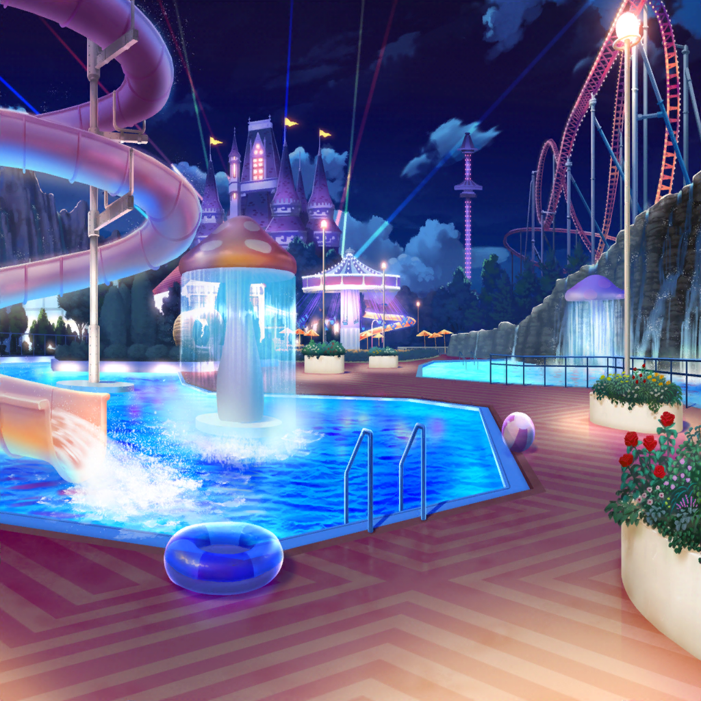

トコナッツパーク 中央の湖
テーマパークアクター
レディースアンドジェントルメン！
トコナッツパークへようこそ！
テーマパークアクター
今宵、皆様には水と魔法のステージをお目にかけましょう！
どうぞ最後までお楽しみください！
あこ
わあ！ 湖の上がライトアップされたよ！
燐子
昼間はなかったのに……湖の真ん中にステージができてる……
赤や青や色々な色に光って……夢の世界にいるみたいだね……
リサ
あ、見て見て！
たくさん船が出てきたよ！ 船の上でダンスしてる〜！
あこ
ダンサーさん達みんなカッコいいな〜！
あこもダンス部の血が騒いできちゃったよ〜！
燐子
ダンサーさんの衣装も……すごく素敵だね……
燐子
デザインは……海の生き物をモチーフにしてるのかな……？
かわいい……
リサ
ふふ、燐子も衣装作りの血が騒いできちゃった？
燐子
はい……
あんな衣装でステージができたら……キレイだなと思って……
あこ
わあ！ 花火が上がったよ！
湖がキラキラして、ホントに魔法みたいだねっ！
あこ
あこもあんなふうに見てる人を
釘付けにしちゃうステージしてみたいな〜！
あこ
あ、そうだ！ いいこと思いついちゃった！
リサ
どうしたの？
あこ
あこがドラムを叩くと花火が上がるようにしたら、
ちょーカッコよくない！？
あこ
ステージはキラキラだし、
お客さんも大盛り上がり間違いなしだよっ！
リサ
あはは、それライブハウス出禁になるっていうか、
花火でアタシらが危ないから〜！
友希那
…………
友希那
みんな、すっかりショーに心を奪われてるみたいね
紗夜
ええ、これだけ見事なステージですから無理もありません
友希那
あこは何か起こるたびに目を輝かせているわね。
燐子はステージよりも衣装のほうに目が向いているのかしら……
紗夜
そういう湊さんも、ショーよりそれを見ている
メンバーのほうが気になっているようですね
友希那
……？
紗夜
今日、湊さんを見ていてなんとなくわかった気がします。
どうして一緒にここに来たのか
紗夜
バンドから離れたところで、メンバーがどんなふうに考え、
行動するのかを知りたかったんじゃないですか？
友希那
……ええ、その通りよ。気づいていたのね
紗夜
はい、でも私だけではなく
他のメンバーも様子が違うことに気がついていたと思います
紗夜
湊さんがテーマパークに興味があるとは思えませんし、
何より明らかに様子が変だったので
友希那
そんなにおかしなことはしていないと思うけれど……
紗夜
いえ、大分不自然でした
友希那
…………
紗夜
でも、こんなことを始めたのには何か理由があるんですか？
友希那
……SMSに出演した時のこと、あなたも覚えているでしょう
友希那
あのフェスでの失敗のあと、同じ気持ちで
バンドに向き合えなかった私達はバラバラになるところだった
友希那
もう二度とあんなことは起こしたくない……そう思ったのよ
紗夜
そのために一緒にここに来たというわけですか
友希那
Roseliaでいる時には見せない姿を見られると思ったの。
みんなが興味のあることを一緒に体験したら、
見えるものも変わってくる……そんな気がして
紗夜
それで宇田川さんと遊んだり、ウォータースライダーに……
紗夜
でも、それは一理あるのかもしれませんね。
相手と同じ目線に立って初めて見えるものもありますから
紗夜
それにしても……
今日はのんびりテーマパークを楽しんでいるのかと思ったら、
結局Roseliaのことを考えていたんですね
友希那
そうね。でも、それはいつものことよ。
何かをしていても
ふとRoseliaのことを考えている時間が増えてきたから……
紗夜
それだけ湊さんの中でRoseliaが
大きな存在だということです。
それは私にとってもですが……
友希那
ただ、今日のことだけれどうまくいったのかは少し疑問だわ
紗夜
何か問題でも？
友希那
１日ここで過ごして、前よりもみんなのことがわかった気がする
友希那
けれど、わかったのは些細なことばかりだもの。
あまり理解が深まった実感がないわ
紗夜
それは……今すぐ結論を出せることでは、
ないのではないでしょうか
紗夜
お互いを理解していくことは大切なことだと思います。
ですが、何より同じ時間を積み重ねることが大切だと思います
紗夜
今の私達には……だから、
きっと今日のことも意味のあることです
友希那
紗夜……
そうね、そうかもしれないわ